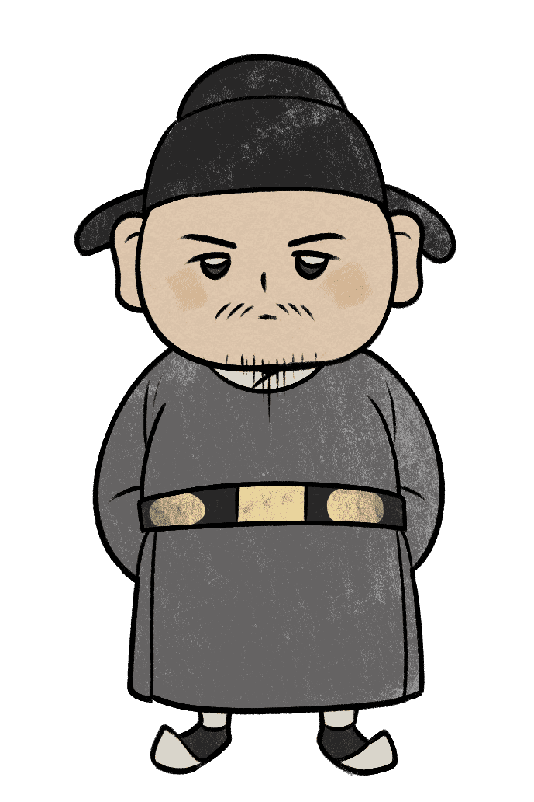

성품 유형지
소현세자
"호기심만은 세계 1등! 모험하는 왕자"

누구보다 개방적이고 사람이나 사물에 대한 선입견 없이 있는 그대로를 받아들이는 능력은 당신의 뛰어난 장점 중 하나입니다.
소현세자는 비록 아버지 인조의 반대에 부딪히기는 하지만, 배타적이고 보수적인 조선의 분위기에서 서양의 문물을 받아들이겠다는 진취적인 생각을 하게 됩니다.
이러한 소현세자의 모습과 비슷하게 당신 역시 언제나 이론적이고 사전적인 공부보다는 현장에 직접 뛰어들어 체험을 통해 경험을 하는 것을 더 선호합니다.
또한 당신 역시 현실적이고 실용적인 면에서 분석적인 자세를 보이며 고정관념에 갇히는 것을 싫어하는 편입니다. 이러한 개방적인 동시에 현실적인 계산에 빠른 당신과 같은 성격은
사업가들에게서 흔히 찾아볼 수 있으며 남들보다 높은 수익을 올릴 확률이 높습니다.
다음
성품 유형지
① 신문물에 눈을 뜨다.
소현세자가 청에서 지내던 시기, 그는 종교인이자 과학자였던 독일인 선교사 아담 샬을 만나게 됩니다. 아담 샬은 청의 관리로 별을 관측하는 일을 수행 중이었는데 소현세자는 그를 통해 서양의 과학기술을 처음으로 접하게 됩니다. 당시 청나라는 명나라를 멸망시킬 만큼 국력이 강한 나라였고, 많은 수의 서양 선교사들이 들어와 각종 서양 과학기술을 이용한 문물들이 이미 대중화된 상황이었습니다. 이에 충격을 받은 소현세자는 조선에도 이러한 기술을 도입 해야겠다는 의지를 가지고 8년 뒤 조선으로 귀국하는 길에 화포, 천리경, 천문학 서적 등 다양한 서양문물을 들이게 됩니다.② 새로운 종교관을 받아들이다.
소현세자는 독일인 선교사 아담 샬을 통해 천주교를 접하게 됩니다. 이후 소현세자가 조선으로 돌아가게 되자 아담 샬은 서적과 지구본, 천구상 등을 선물로 주었고 이를 받은 소현세자는 손수 한문으로 편지를 써 감사의 뜻을 밝힙니다. 편지에는 “조선에도 이러한 종류의 덕을 함양하라는 책은 어렵지 않게 찾아볼 수 있습니다. 그러나 그 책들은 거짓으로 가득 차 있습니다. 그것들이 수백 년에 걸쳐 진실과는 아주 크게 동떨어져 있는 서적이라는 점을 인정하지 않을 수 없습니다.” 라고 하며 당시 조선을 지배하던 유교적 전통에 대한 비판적인 시각을 드러냈습니다.
위인소개
소현세자는 1612년에 태어나 1625년에 33세를 일기로 사망한 인물로서, 조선 인조의 왕세자로 인조반정이 성공하며 하루아침에 원세자로 오르게 됩니다.
병자호란에서 조선이 패한 후 그는 청나라로 끌려가게 되지만 이 시기 청나라의 고관들과 두터운 친분을 쌓으며 인맥과 외교능력을 기릅니다.
고관들의 인맥으로 만나게 된 독일인 신부 아담 샬을 통해 서양의 문물을 접하게 되었고 당시까지 폐쇄적이었던 조선에 서양의 발전된 문물을 도입하려 애쓰게 됩니다.
이러한 소현세자의 개방적이고 진취적인 모습은 ‘심양일기’를 통해 후세에게 전해졌습니다.

천생연분
포은 정몽주

견원지간
명월 황진이
포은 정몽주 : 서로가 서로를 있는 그대로 아껴주며, 서로의 존재와 가치를 인정하는 최상의 궁합으로
쿵하면 짝하는, 서로 잘 통하는 관계입니다.
명월 황진이 : 관계를 놓을 때까지 계속해서 충돌하는 최악의 궁합입니다. 하지만 마음을 비운다면 오히려
편안해 질 수 있습니다.
이전